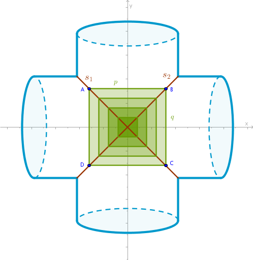
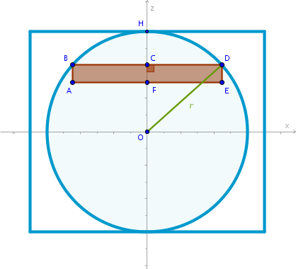
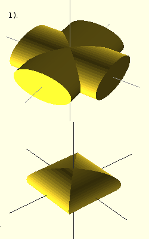

Right Circular Cylinder
Problem
Find the volume of a Steinmetz solid formed by two right circular cylinders of equal radii \(r\) whose axes of rotation intersect at right angles.
Solution
The problem we face trying to calculate the volume of the solid in question is that it is not immediately obvious what type of a well-understood geometric object should be used as a primitive part.
In the previous chapters the solids in question suggested practically themselves what such primitive part should be. Further, once a primitive solid is found the only thing that remained to be done was to position it in such a way that the resulting sum and limit can be computed either directly or indirectly.
Our favorite choices have so far been rectangular prisms and right circular or elliptic cylinders. To find the primitive part that will solve this problem we observe the following.
Both cylinders are right circular, both have the same radius and the cylinders' axis of rotation intersect at right angles. Let us fix an arbitrary point on any of the seems formed by the intersection of the cylinders. Let us say that \(A\) on \(s_1\) is such a point:
If we construct a straight line \(p\) through \(A\) parallel to \(Ox\) then \(p\) will intersect \(s_2\) at \(B\). If we construct a straight line \(q\) through \(B\) parallel to \(Oy\) then \(q\) will intersect \(s_1\) at \(C\) and so on.
It follows then that the \(z\)-coordinate of \(A, B, C\) and \(D\) will be the same due to above mentioned symmetry:
$$z_A = z_B = z_C = z_D$$And their \(x\) and \(y\)-coordinates will only differ by the sign - not the magnitude:
$$|x_A| = |x_B| = |x_C| = |x_D| = |y_A| = |y_B| = |y_C| = |y_D|$$which means that \(ABCD\) is a square and that we can choose a square prism as a primitive part.
Because the volume in question is symmetrical relative to the \(xOy\) plane consider, for example, its upper half - where \(z > 0\):
Divide \(OH\) into \(n\) line segments of equal length such that:
$$AB = FC = ED = \frac {r}{n}$$The volume of the \(i-\)th square prism then is:
$$V'_i = BD^2 \times \frac {r}{n}$$Find \(BD\) from the right, by construction, triangle \(\triangle OCD\) via the Pythagorean theorem:
$$BD^2 = 4r^2 - 4OC^2 =$$ $$4r^2 - 4z_i^2 =$$ $$4r^2 - \frac {4r^2}{n^2}i^2$$where we have used the fact that:
$$OC = z_i = \frac {r}{n} \times i$$Then:
$$V'_i = \frac {4r^3}{n^3}(n^2 - i^2)$$An approximate volume of the entire Steinmetz solid is the sum of volumes of its two halves:
$$V' = 2 \times \sum_{i=1}^n V'_i =$$ $$\frac {8r^3}{n^3} (n^2 \sum_{i=1}^n - \sum_{i=1}^n i^2) =$$ $$\frac {8r^3}{n^3}\Big(n^3 - \frac {n(n + 1)(2n + 1)}{6}\Big) =$$ $$\frac {8r^3}{n^3}\Big(n^3 - \frac {n^3}{6}\Big(1 + \frac{1}{n}\Big) \Big(2 + \frac{1}{n}\Big)\Big) =$$ $$8r^3\Big(\frac{2}{3} - \frac {1}{2n} - \frac{1}{6n^2}\Big)$$Applying the corresponding limit to \(V'\) we obtain:
$$V = \lim_{n \to +\infty} V' =$$ $$8r^3\Big(\lim_{n \to +\infty} \frac{2}{3} - \lim_{n \to +\infty} \frac {1}{2n} - \lim_{n \to +\infty} \frac{1}{6n^2}\Big)$$ $$\bbox[#e8e8e8,3pt]{V = \frac {16}{3} r^3}$$We observe that as with the volume of the hoof the irrational number \(\pi\) does not participate in the formula that captures the volume of the Steinmetz solid.
Right Elliptic Cylinders
If we replace the right circular cylinders with their elliptic counterparts with semi-major \(a\) axis and semi-minor \(b\) axis then the corresponding Steinmetz solid can be formed in the following ways:
- when the cylinders' major axes are perpendicular while their minor axes are parallel:

- when the cylinders' major axes are parallel while their minor axes are
perpendicular:
(the above drawings were created with Open SCAD and merged with GIMP)
For the first case we assume that the cylinders' \(a\)-axes are perpendicular while their \(b\)-axes are parallel. We divide one half of the Steinmetz solid along the \(b\) axes into \(n\) square prisms with the same height:
$$\frac {b}{n}$$The volume of the \(i-\)th square prism then is:
$$V'_i = 4x_i^2 \frac {b}{n}$$where \(x_i\) is the \(x\)-coordinate of the \(i-\)th point on the seem of the intersection of two cylinders that is one of the vertexes of the \(i-\)the square prism.
The Cartesian equation of the corresponding ellipse in the \(zOx\) plane is:
$$\frac {x_i^2}{a^2} + \frac {z_i^2}{b^2} = 1$$ $$x_i^2 = a^2\Big(1 - \frac {z_i^2}{b^2}\Big)$$and since:
$$z_i = \frac {b}{n} \times i$$for \(V'_i\) we obtain:
$$V'_i = \frac {4a^2b}{n^3}(n^2 - i^2)$$The approximate volume of the solid in question is the sum of volumes of its two halves:
$$V' = 2 \times \sum_{i=1}^n V'_i =$$ $$\frac {8a^2b}{n^3}\sum_{i=1}^n (n^2 - i^2) =$$ $$8a^2b\Big(\frac{2}{3} - \frac {1}{2n} - \frac{1}{6n^2}\Big)$$Applying the limit to \(V'\) as \(n \to +\infty\) we obtain:
$$V = \lim_{n \to +\infty} V' =$$ $$8a^2b\Big(\lim_{n \to +\infty} \frac{2}{3} - \lim_{n \to +\infty} \frac {1}{2n} - \lim_{n \to +\infty} \frac{1}{6n^2}\Big)$$ $$\bbox[#e8e8e8,3pt]{V = \frac {16}{3} a^2b}$$For the second case when the \(a\)-axes are parallel while the \(b\)-axes are perpendicular, by analogy, we obtain:
$$\bbox[#e8e8e8,3pt]{V = \frac {16}{3} ab^2}$$\(\blacksquare\)